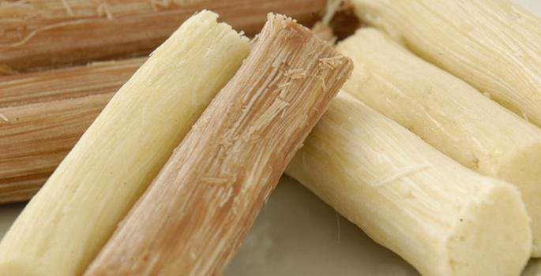

Welcome to Eskişehir
Home |
Local Dishes |
Historical Places |
Useful Links |
About Me |
Contact Me |
Registration |
Çibörek
Chebureki, sometimes spelled chiburekki, (Crimean Tatar: çiberek, Turkish: çibörek, Tajik: chiburekki, Romanian: șuberec, Russian: чебурек, cheburek, Azerbaijani: ət qutabı, Ukrainian: чебуреки also known as çır-çır) is a deep-fried turnover with a filling of ground or minced meat and onions. It is made with a single round piece of dough folded over the filling in a crescent shape. A national dish of the Crimean Tatars and traditional for Turkish people.
Actually there are some discussions about where the "çibörek" name has came today. According to one idea "şırbörek" comes from the voice of frying. And other moots that "çi" means "tasty" in Kipczak dialect.
Sini Mantı with Lentil
According to the requests this mantı can be prepared with minced meet or lentil. But the original version is with lentil. Lentil has protein as much as meat by the way. "sini" is a kind of flameproof tray. When this lentils are filled into paste they are cooked on "sini". These mantı is served with garlic yogurt on it.
Met Halva
Met halva, is the halva that tastes like "pişmaniye" of Eskişehir. It's name is come from a street game which is played with "met"(stick) and dib. Loser side of the "met game" have to make this halva in long winter nights. That's how Met Halva is created. For making it flour, oil, sugar, lemon and water has to be prepared as fibres.
Boza
It is a malt drink made from maize (corn) and wheat in Albania, fermented wheat in Turkey
Fermented cereal flour (generally millet) drinks have been produced by native Anatolians and Mesopotamians since the 9th or 8th millennia BC, and Xenophon mentioned in the 4th century BC how the locals preserved and cooled the preparations in earthen pots that were buried.[6] There are references mentioning boza-like "fermented (ground) millet drink" in Akkadian and Sumerian texts; the beverage is said to be respectively arsikku and ar-zig.[7] In the 10th century that the drink was called Boza and became common amongst Central Asian Turkic peoples[citation needed]. Later it spread to the Caucasus and the Balkans. It enjoyed its golden age under the Ottomans, and boza making became one of the principal trades in towns and cities.
Until the 16th century, boza was drunk freely everywhere, but the custom of making the so-called Tartar boza laced with opium brought the wrath of the authorities down on the drink, and it was prohibited by sultan Selim II (1566–1574). He describes a type of non-alcoholic sweet boza of a milk white color usually made by Albanians.
In the 17th century, Sultan Mehmed IV (1648–1687) prohibited alcoholic drinks including boza, and closed down all the boza shops. This prohibition would be reinforced and then loosened several times in the history of the empire. The 17th century Turkish traveler Evliya Çelebi reports that boza was widely drunk at this time, and that there were 300 boza shops employing over a thousand people in Istanbul alone.
At this period boza was widely drunk by the Janissaries in the army. It contained only a low level of alcohol, so as long as it was not consumed in sufficient quantities to cause drunkenness, it was tolerated as a warming and strengthening beverage for soldiers. As Evliya Çelebi explained in the first volume ("Istanbul") of his Seyahatname (Travelogues), "These boza makers are numerous in the army. To drink sufficient boza to cause intoxication is sinful but, unlike wine, in small quantities it is not condemned."[8] In the 19th century, the sweet and non-alcoholic boza preferred at the Ottoman palace became increasingly popular, while the sour and alcoholic type of boza went out of style. In 1876, brothers Haci Ibrahim and Haci Sadik established a boza shop in the Istanbul district of Vefa, close to the then center of entertainment, Direklerarası. This boza, with its thick consistency and tart flavor, became famous throughout the city, and is the only boza shop dating from that period still in business today. The firm is now run by Haci Sadik and Haci Ibrahim's great-great-grandchildren.
Phyllo Chicken

Chickens are boiled with their bones, then they are are deboned. Thus you can taste also the bone. Chickens are wraped up with many spices and lastly goes into the oven
ayed with "met"(stick) and dib. Loser side of the "met game" have to make this halva in long winter nights. That's how Met Halva is created. For making it flour, oil, sugar, lemon and water has to be prepared as fibres.